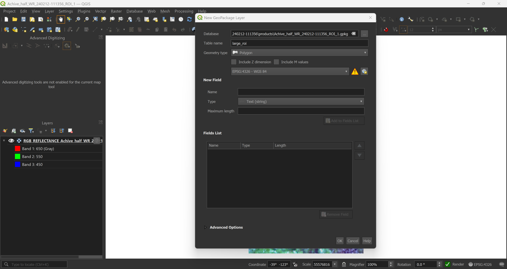

# Get the ROIs
rois <- hsi_tools_core$analysisRegions4 Regions of interest
Selecting regions of interest (ROI) is a crucial task that requires deciding which parts of the spatial dataset will be analyzed. With HSItools, we follow two paths to select the data. The short one is based solely on the Shiny output and is limited, and the longer one is based on the Geographic Information System (GIS Software). In the spirit of the free and open source, we suggest QGIS, but other apps, such as ArcGIS Pro, allow the same functionality. What’s important is that using GIS will enable you to freely draw shapes for data masking, a technique that helps you to focus on specific areas of the dataset while excluding others – more on this later.
4.1 Short path – The Shiny Path
If you opt for the Shiny path, you will work with ROIs selected in the Shiny app. These ROIs are strictly rectangular, and you don’t have an immediate option to mask the data. However, you can still do it later, as you can mask any raster data. The selected regions are available within the HSItools_core.rds file or stored as an in-memory object.
4.2 Long path – The GIS Path
Here, we assume we are at least somewhat familiar with the GIS environment.
QGIS project
It is a good idea to save the QGIS project file so you can keep the placement and customization of your layers. We suggest keeping the project name the same as your captured data.
4.2.1 QGIS
For speed, we load the full-resolution RGB preview generated previously with the stretch_raster_full() function, preferably a .tif file. Simply dragging and dropping into the empty window is enough. In the options of your new raster layer, you can increase your data’s brightness or contrast, making drawing easier.


Once you’re happy with your project and data presentation, start drawing. Here we have a large ROI, covering most of the core, a smaller ROI that we will use to extract the data, even smaller ROIs for sample extraction and masks covering parts of the captured data that should be excluded from the analysis.

4.2.2 Reading data in R
We now have all our ROIs. If you need to correct them, add or remove some polygons it is fine, as long as you do not open the GeoPackage file both in QGIS and R at the same time. We keep these ROIs for later.
# Read data
# Large ROI
rois_lrg <- sf::read_sf("Achive_half_WR_240212-111356/products/Achive_half_WR_240212-111356_ROI_1.gpkg", layer = "large_roi")
# Small ROI
rois_sml <- sf::read_sf("Achive_half_WR_240212-111356/products/Achive_half_WR_240212-111356_ROI_1.gpkg", layer = "small_roi")
# Samples ROIs
rois_smp <- sf::read_sf("Achive_half_WR_240212-111356/products/Achive_half_WR_240212-111356_ROI_1.gpkg", layer = "samples")
# Mask ROIs
rois_msk <- sf::read_sf("Achive_half_WR_240212-111356/products/Achive_half_WR_240212-111356_ROI_1.gpkg", layer = "mask")